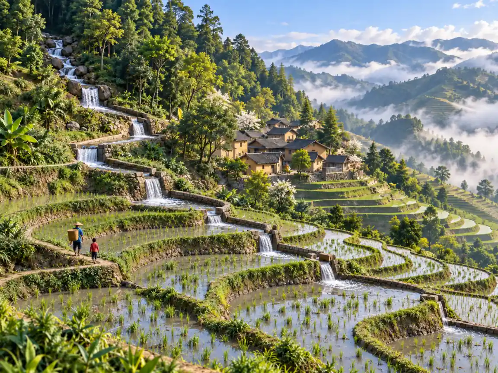
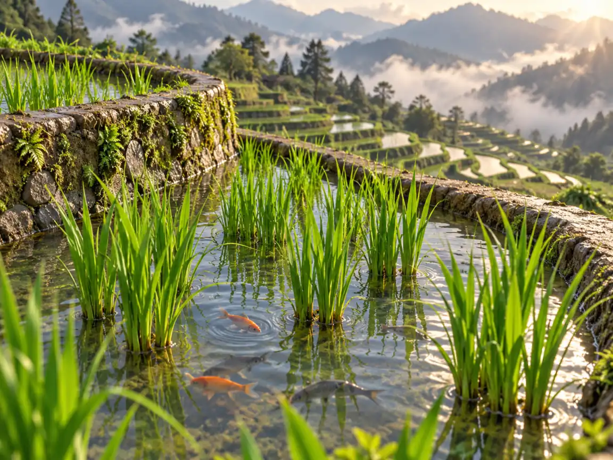

梯田：1300年前，人们怎么把整座山变成现实版 Minecraft？
Rice Terraces: How Did People Turn a Mountain into Real-Life Minecraft 1,300 Years Ago?
Page 1
一座山，变成了几千级台阶
A Mountain Made of Giant Steps

Water-filled terraces spread across a mountainside in Yunnan like a staircase built on the land.
这看起来真的很像 Minecraft。一整座山被改成了成千上万级巨大的台阶。这一层装着水，下一层长着稻子；小路和水沟顺着山坡弯弯曲曲，好像有人不停地挖土、填土，再决定水应该往哪里走。
可这不是电子游戏。在中国云南南部的红河山区，哈尼族人已经营建和维护这些梯田大约 1300 年了。
他们遇到的是一个非常实际的问题：水稻喜欢长在浅浅的水田里，可山坡是斜的。水往山上一倒，转眼就往下面跑。那怎么办？把山重新变个形状。
人们在山坡上挖出比较平的田面，再筑起田埂，把泥土和水挡住。下面再做一层，再下一层。就这样，一片斜坡慢慢变成一层一层的梯田。有些地方，从山上的森林一直到下面的山谷，竟然可以排下大约三千层梯田。
可是，把田做出来还只完成了一半。这么多田，水从哪里来？
This looks like Minecraft. A whole mountain has been reshaped into thousands of giant steps. One level holds water. Another grows rice. Narrow paths and channels curve around the slope as if someone had been moving blocks, flattening land, and deciding exactly where the water should go.
Except this mountain is real. In southern Yúnnán, China, Hāní communities have been building and caring for the Honghe Hāní Rice Terraces for about 1,300 years.
They had a very practical problem. Rice grows well in shallow, standing water—but mountains are steep. Water poured onto a slope simply runs downhill. So people changed the shape of the mountain.
They carved flatter fields into the slopes and built raised edges to hold soil and water. One field sat below another, and another below that. Over generations, entire mountainsides became enormous staircases of farmland. In some places, there can be as many as 3,000 terraces between the forest above and the valley below.
Making the fields was only the beginning. Now they had to get water to all of them.
Page 2
怎么给整座山送水？
How Do You Water a Whole Mountain?

The mountain forest, village, terraces, and downhill-flowing water form one connected water system.
答案要从稻田上面的森林开始。雨落进山顶的树林，一部分水渗进地下，再从泉水和溪流里慢慢出来。森林下面是村寨，村寨下面才是一层层梯田。
人们沿着山势修出许多水沟，把山上的水接住，再送往不同的田。一条水沟走到半路，可以分成两条；小水渠又把水继续送到更远的地方。水本来就会往低处流，人要解决的是让它往对的地方流。
所以，远远看起来很漂亮的那些弯弯曲曲，其实每一条都有工作要做。田面要够平，水才不会全积在一边；田埂要挡得住水；水渠还得把水送到需要它的地方，而不是让它一下子冲到山脚。远处看是一幅图案，走近以后，却是一整座山的水路系统。
而且有些水田里，还有东西正在游。鱼。
The water system begins high above the rice. At the top of the mountain are forests. Rain falls there, sinks into the ground, and later emerges in springs and streams. Below the forests sit villages, and below the villages spread the terraces.
People built networks of channels to guide mountain water around the slopes and into the fields. A channel might carry water past one terrace, divide, then send part of its flow somewhere else. Smaller ditches could guide it farther across the mountain. Gravity keeps the water moving downhill, but people decide which path it takes.
That means every curve in the terraces has a job. A field has to be level enough to hold shallow water. Its bank has to keep the water from escaping too quickly. Channels have to carry water from one place to another without letting it rush straight down the mountain. What looks from far away like a beautiful pattern is also a giant working water system.
And inside some of those watery fields, something moves. A fish.
Page 3
稻田里为什么会有鱼？
Why Is There a Fish in the Rice Field?

Rice grows in shallow water while fish swim between the plants.
水稻田，本来就是一片浅浅的水。所以中国一些地方很早就开始在同一块田里既种水稻，又养鱼。这可不只是为了多一道菜：鱼在稻田里游动，会吃掉一些虫子的幼虫和杂草；它们搅动水和泥，排泄物还能给田里增加养分。反过来，水稻也会给鱼遮阴，还能提供食物和生活的地方。
于是，同一块山地可以做两件事。水面上，长着稻子。水里面，养着鱼。
这种稻鱼共生在中国已经有很长的历史。大约两千年前的汉代陶器上，甚至已经出现了鱼从池塘游向稻田的画面。而哈尼梯田传统的农业系统里，也不只有水稻。鱼、鳝鱼、鸭子、水牛和牛，都曾经成为这个山地生活的一部分。
所以一块梯田并不只是一块装着水的“山上台阶”。里面还可以藏着一个小小的生活世界。
A flooded rice field is also a shallow pond. For a very long time, farmers in parts of China have taken advantage of that fact by raising rice and fish together. The idea is surprisingly useful: fish swimming among the rice can eat insect larvae and some weeds. Their movement stirs the water and softens the mud. Their waste adds nutrients to the field. The rice plants, meanwhile, provide shade and food for the fish.
So the same patch of mountain can produce rice above the water and fish below it.
This is not a new experiment. Evidence for rice-fish farming in China reaches back about 2,000 years. A clay object from the Han period even shows a fish swimming from a pond toward a rice field. The Hāní terrace landscape has traditionally supported much more than rice. Fish, eels, ducks, cattle, and water buffalo have all been part of the larger farming system.
A rice terrace, then, is not simply a wet step cut into a mountain. It can be a tiny living world.
Page 4
真正的 Minecraft 没有重新开始键
Real-Life Minecraft
远远望过去，红河梯田甚至漂亮得有点不像真的。几千层弯弯曲曲的田绕着山坡。灌水的时候，一块块水田像打碎的镜子，把天空装进去；水稻长起来以后，同一座山又慢慢变成一层一层的绿色。
可这幅景色里的每一个部分都必须真的工作。山顶的森林帮助留住水；水渠把水送下来；村寨在森林和梯田之间；一层层平整的田让水慢下来，也给水稻留下生长的地方。有些田里，鱼和其他动物还会一起生活。
今天，一个孩子可以在 Minecraft 里做出差不多的样子：挖掉几个方块，填上一些土，把水引过去，再种上庄稼。
可是，真正的山没有“重新开始”。田埂必须撑得住。水必须流到正确的田里。稻子必须真的长出来。而在 Minecraft 出现一千多年前，人们已经在这座真实的山上，一点一点学会了怎样让这一切同时发生。
Minecraft 让我们在屏幕里重新塑造一个世界。而这里的人，重新塑造的是真正的世界。
Stand far enough away from the Honghe terraces and the mountain can look almost impossible. Thousands of curving levels wrap around the slopes. During the wet season, water-filled fields reflect the sky like broken pieces of mirror. Later, the same mountain turns green as the rice grows.
But each part of that landscape has to work. The forest helps collect and hold water. Channels guide it downhill. Villages sit between the forest and the fields. Terraces slow the water and give rice a flat place to grow. Animals can become part of the farming system too.
Today, a child could build something that looks like this in Minecraft: reshape a hill, move some blocks, redirect water, plant crops.
On the real mountain, there was no reset button. The banks had to hold. The water had to reach the right fields. The rice had to grow. People began figuring out how to make this mountain-sized system work more than a thousand years before Minecraft existed.
Minecraft lets us reshape a world on a screen. Here, people reshape the real world.